국립한국교통대학교는 120년의 유구한 역사를 가진 국내 유일의 교통 특성화 대학으로서 진리탐구, 미래창조 및 인류봉사의 교육이념 아래 미래사회의 주역이 될 인재 육성을 통해 국가와 지역사회에 기여해 왔습니다. 우리 대학의 조직문화는 오랜 세월에 걸쳐 다져진 ‘실용성’과 ‘현장성’에 뿌리를 두고 있습니다. 이론과 실무를 겸비한, 내실을 추구하는 문화 속에서 학생과 동문들은 각자의 현장에서 인정받는 전문가로 성장하고 있습니다.
이제 우리 대학의 모든 구성원은 비전을 현실로 만들고 도전을 혁신으로 삼아, 장구하고 자랑스러운 120년 역사에 부끄럽지 않을 도약의 새 역사를 써 나가고자 합니다. 국립한국교통대학교 가족 여러분, 지역주민 여러분, 오늘의 우리 대학이 있기까지 헌신해주신 모든 분께 깊이 감사드립니다. 우리 모두 ‘One KNUT’라는 이름 아래 한마음으로 힘을 모아, 세계를 선도하는 자랑스러운 대학의 역사를 함께 만들어갑시다.
국립한국교통대학교는 120년의 길을 걸으며 국가와 지역사회의 발전을 함께 해왔습니다.
세 개의 길이 만나 하나의 큰 길이 되었고, 오늘의 국립한국교통대학교는 그 길 위에서 새로운 도약의 미래를 열어가고 있습니다.
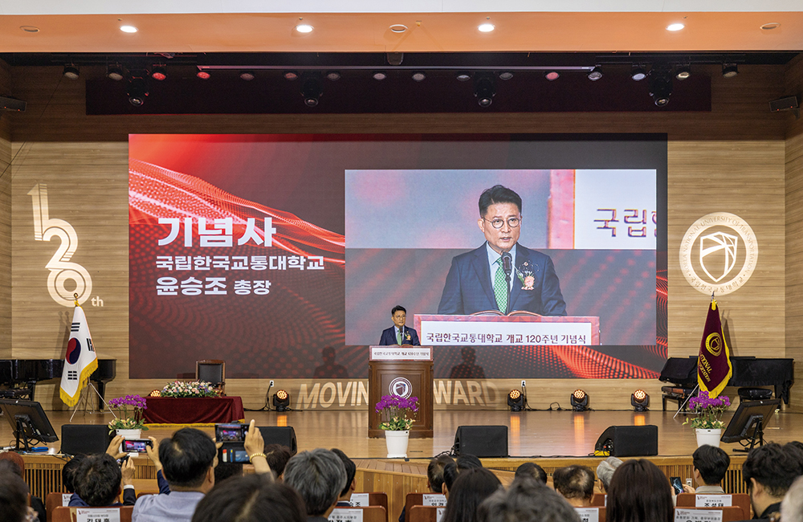
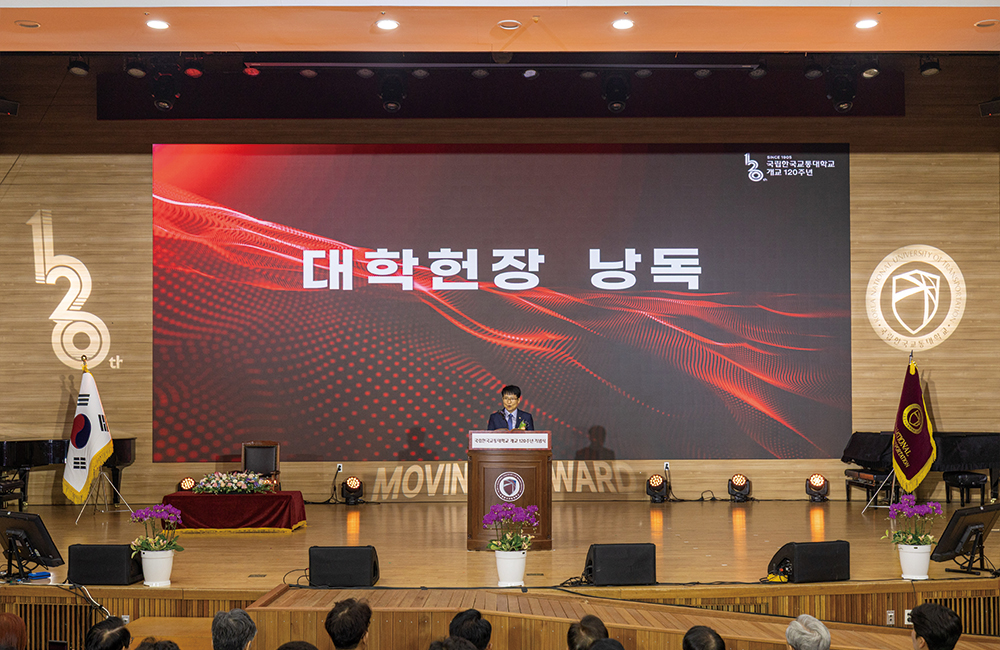
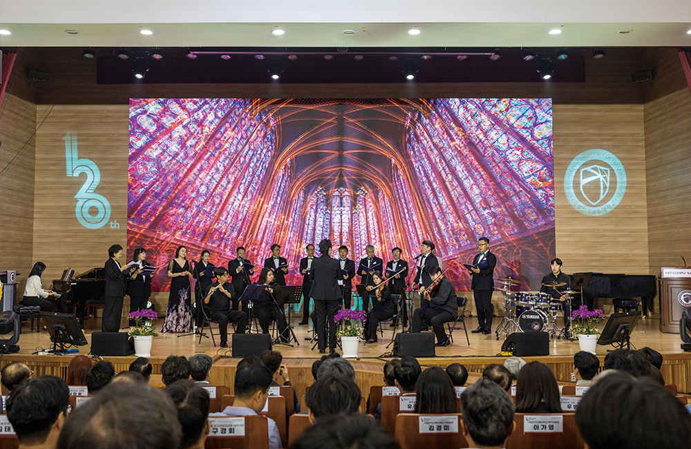
개교 120주년을 맞아 국립한국교통대학교는 다양한 활동을 이어가며 120년의 의미를 되새기고 미래를 함께 그렸습니다.
걸어온 길을 돌아보고 미래를 향한 새로운 출발을 다짐하는 시간을 가졌습니다.
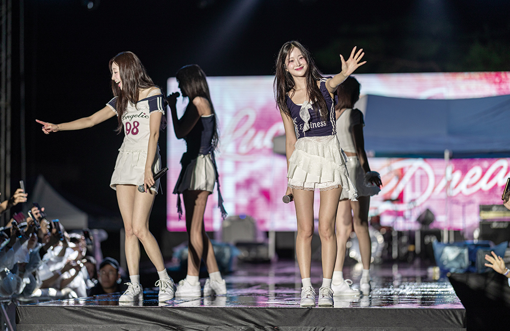
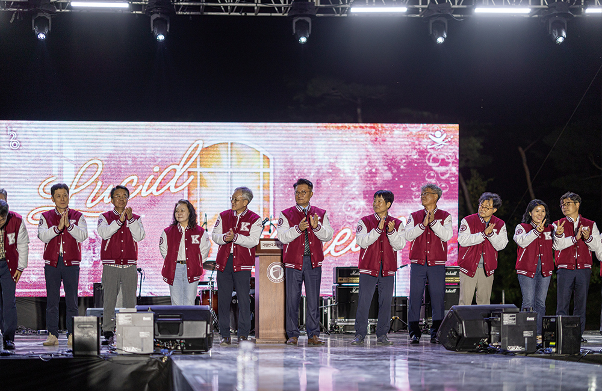
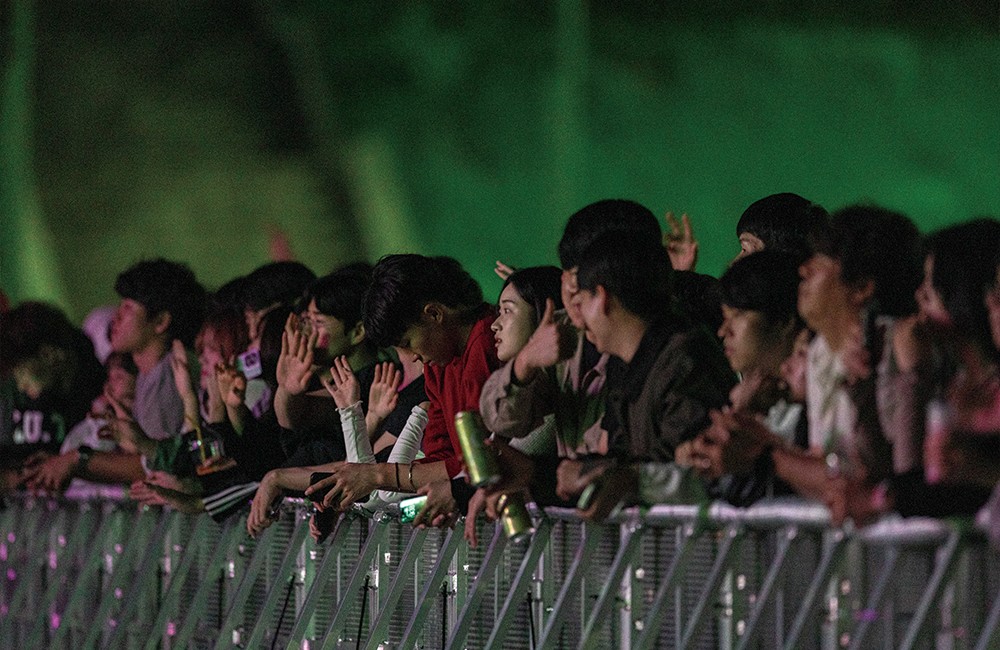
캠퍼스를 가득 채운 웃음과 열정 속에서
우리는 결속을 다지고, 하나 된 마음을 나누었습니다.
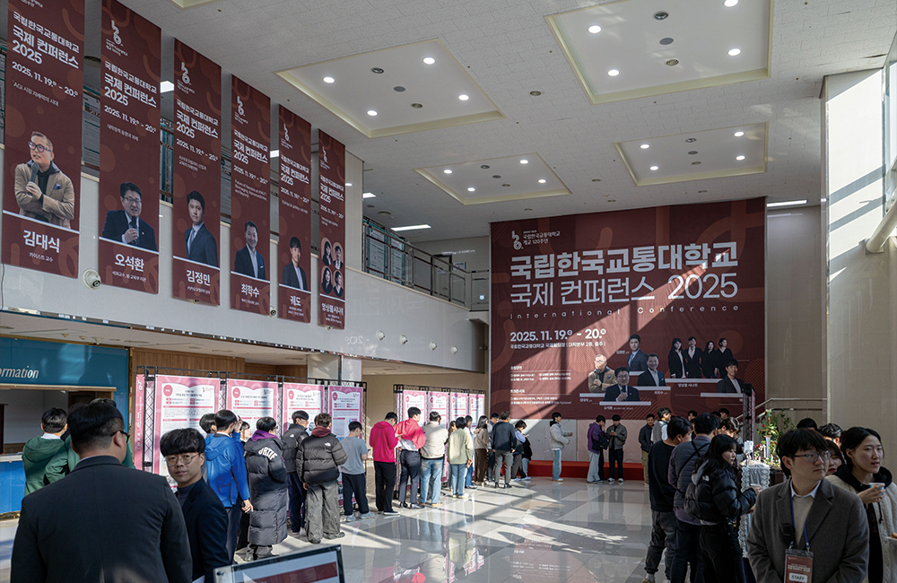
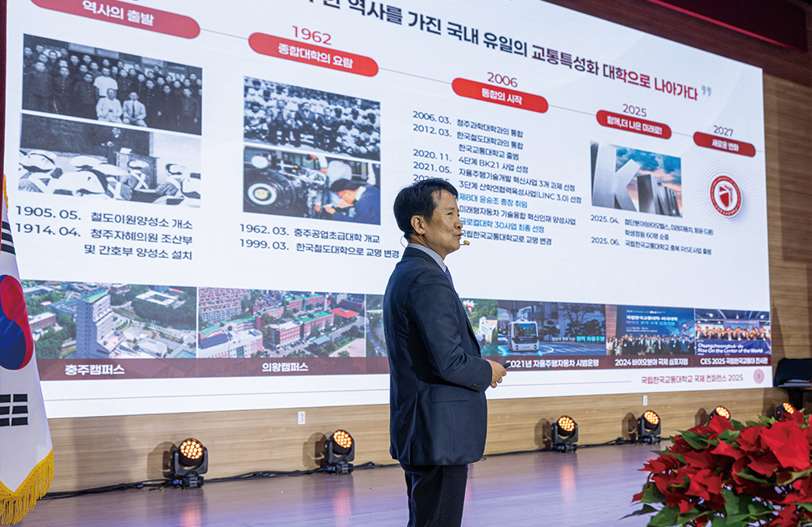
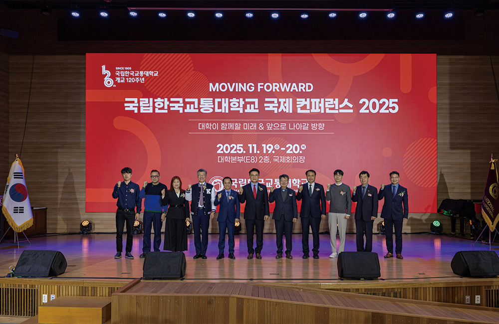
국제 컨퍼런스와 토크콘서트를 열어 지난 역사를 돌아보고 미래방향을 함께 고민하며 가능성을 확장했습니다.
이제, 국립한국교통대학교는 또 하나의 출발선 앞에서
120년의 전통을 딛고 변화와 혁신을 선도하는 글로컬대학으로 힘차게 나아갑니다.
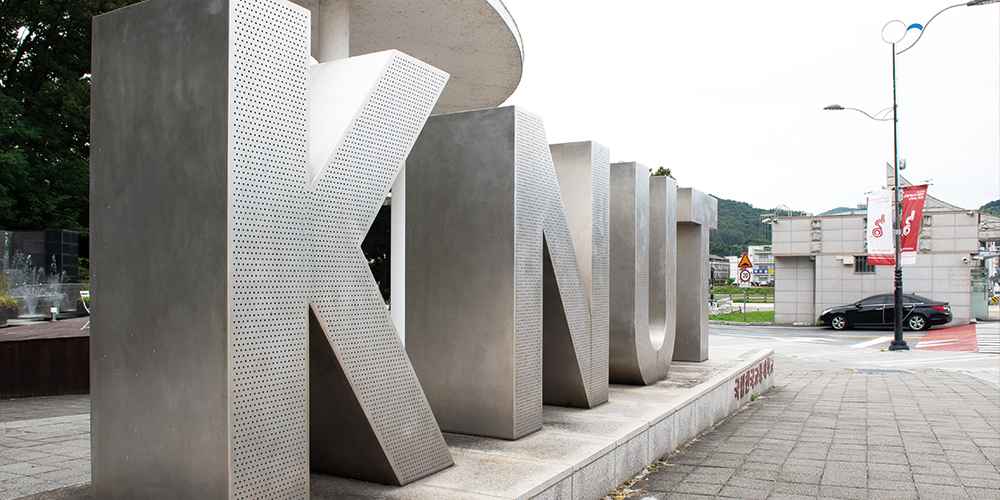
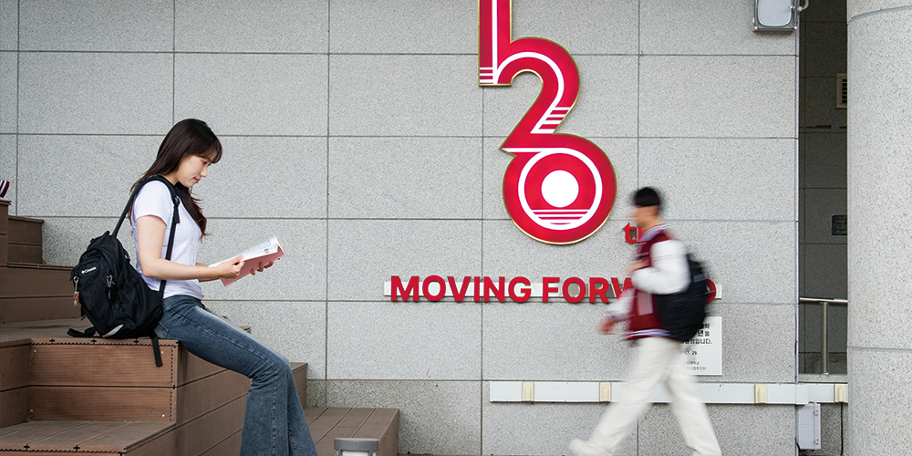